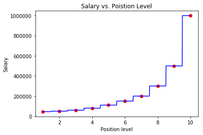
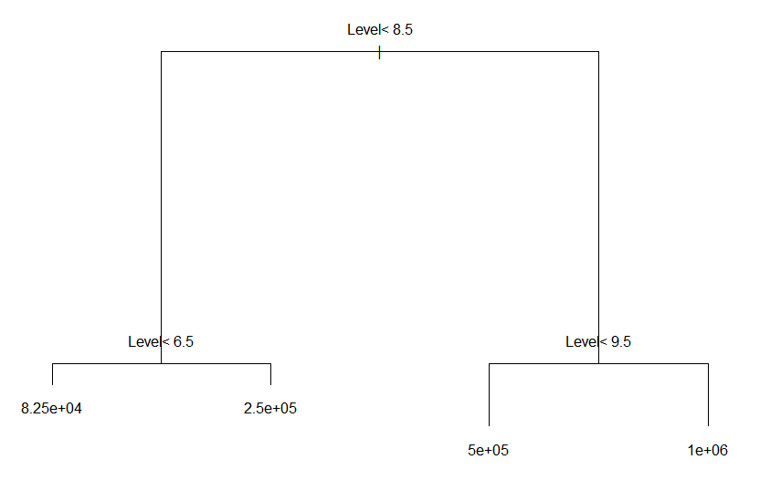
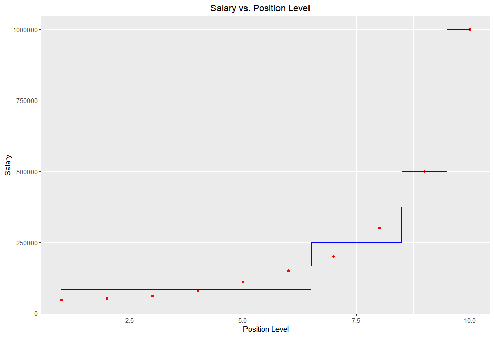

❀ Ｕｓｅｆｕｌ Ｆｏｒｍｕｌａｓ：
✣ Information Entropy : H(X) = −Σi p(xi)log2 p(xi)
✣ Coniditional Entropy : H(Y | X) = −Σi p(xi) H(Y | X = xi)
✣ Information Gain : IG(Y, xi) = H(Y) - H(Y|xi)
❀ Ｄｅｃｉｓｉｏｎ Ｔｒｅｅ Ｒｅｇｒｅｓｓｉｏｎ Ｐｒｏｃｅｄｕｒｅ：
1) Pick an attribute xi with the biggest IG(Y, xi).
2) Split data points into groups based on the split value of the attribute:
if (group is empty): return the parent group's mean y-value
if (group has n data points of ALL same class): return the group's mean y-value
❀ Ｓｃｅｎａｒｉｏ：
As a data scientist in HR department, you are given a dataset
containing info of 10 employees in your company, with each employee's position level and current salary.
By analyzing this data, you are asked to find the relationship between an employee's position level and salary.
❀ Ｐｙｔｈｏｎ Ｃｌａｓｓｅｓ Ｕｓｅｄ：
✣ (from sklearn.tree) DecisionTreeRegressor
❀ Ｒ Ｐａｃｋａｇｅｓ／Ｃｌａｓｓｅｓ Ｕｓｅｄ：
✣ rpart
✣ ggplot2
❀ Ｉｍｐｌｅｍｅｎｔａｔｉｏｎ ｉｎ Ｐｙｔｈｏｎ ＆ Ｒ：
*Try running the Python code & insert the new employee's position level in the company to get an estimate of the Salary!*
https://github.com/lukysummer/Decision-Tree-Regression
❀ ＲＥＳＵＬＴＳ：

The graph above shows the scatter plot of the raw datapoints (red dots) & the decision tree regression lines
(blue line) using Python. The steps in the regression lines represent the mean salary values for each final branch of the decision tree.
The steps have ranges of [1,1.5], [1.5,2.5], [2.5,3.5],..., [8.5,9.5], [9,5,10], which seems to have formed for each of the 10 position levels.
Any new salary prediction will be discrete, as one of the 10 step values, according to which of the 10 ranges the new employee's position level fits into.


The above shows the sketch and plot of the decision tree regressor of the dataset using R.
As seen in the sketch, first split was performed at Position Level = 8.5, and the subsequent splits on the 2 child nodes were performed
at Position Level = 6.5 & = 9.5. Consequently, according to the mean of the datapoints in each of the 4 leaf nodes,
4 discrete steps of Salary prediction were formed.